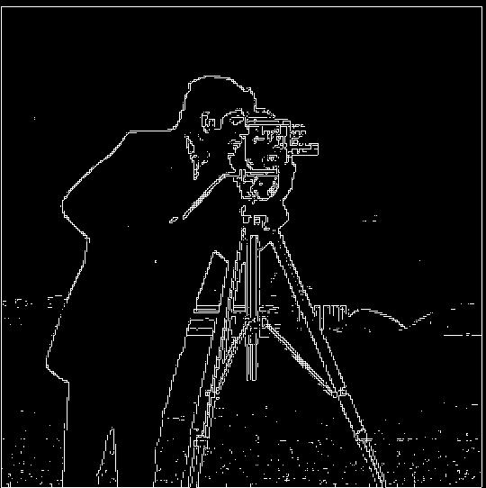

Partial Derivative in x

Partial Derivative in y

Binarized Edge Image

This project aims to TODOTODOTODOTODOTODOTODOTODOTODO programatically apply image processing techniques on photos from the Prokudin-Gorskii collection, primarily with a naive approach then a pyramid approach, to produce an image with color.
In this part, we aim to construct an edge image with a Gaussian kernel. To find the partial
derivative in x and y (which show the intensity change in the horizontal and vertical
directions, respectively), we first convolve the image with the finite difference operators
D_x = [1, -1] and D_y = [1, -1]^T. I chose a Visually looking at the
image, I decided that a threshold = 0.2 looked the best. This highlghted the high
frequencies of the image without including too much noise, which would clutter the binarized
edge image.
Now, we can create and use a derivative of Gaussian filter to convolve the image. First, we
blur the image with a Gaussian filter. Slide 33 of our lecture on
Image Processing II: Convolution and Derivatives shared a rule of thumb of
choosing a half-width of 3$\sigma$ so I chose 6 as the multiplication factor so I chose
kernel_size = 10 and sigma = 10/6. The sigma was chosen
after some manual checks. For both images, I chose threshold = 0.07.

To sharpen an image, we first take the original image and blur each individual RGB channel
with a low-pass Gaussian filter, again effectively removing high-frequency details like fine
edges and textures. Then, we take the difference between the raw image and this blurred one to
get the high frequencies. Then, we sharpen the image through unsharp masking by adding back
the high-frequency parts, which are first multiplied with a $\alpha$ factor. For all examples
below, I blurred with the same kernel_size = 10 and
sigma = 10/6 from the earlier parts.


We can see that the image sharpening technique performed decently well on all 3 images.
In this part, we aim to take the frequencies of a low-frequency image and apply them to a
high-frequency image. In the first example, we align Nutmeg onto Professor Derek Hoiem. As
expected, the aligned picture of Prof. Hoiem is the same as the original iamge since we're
just aligning and adjusting Nutmeg to Prof. Hoeim. We obtain the grayscale aligned images by
calling rgb2gray from skimage.color on the corresponding aligned
image.


We can see that using both color aligned images of nutmeg and image of Prof. Hoiem generated and color aligned image of nutmeg and grayscale aligned image of Prof. Hoiem generated decent results - the hybrid image has a nice contrast and retains the color of Prof. Hoiem's face while including the high frequencies (edges) from nutmeg.
Gaussian stack Laplacian stack Normalize Both can clip even though the code to display images automatically clips for us.

We export the mask image from Adobe Photoshop as JPG so our image has 3 channels. Exporting as
PNG will give 4 channels.
We blend Curry's face onto LeBron's since the Curry's face is larger than LeBron's in the
aligned images. The quality of all 5 images below is not high. We will use higher quality
examples below to better illustrate the results.


The blended image above has rather abrupt changes from bright buildings to ones in the night time. Also, the dark patches in some of Barcelona's city view are awkward. The shadow makes it feel like some clouds are hovering over Barcelona's buildings near the blurred edge.


The blended image now has less sudden changes from one image to another.
I enjoyed working on all parts of this project, specifically the image sharpening part because it brought out some details of the image that I wouldn't have noticed at first. It also feels intriguing to see algorithms being able to extract details that don't seem possible to do so when looking at the blurred image with a naked eye. It was also fun to choose my own images for multiresolution blending.